Photo credits
Food photos from Wikimedia Commons, resized for this page. Used under the licences listed.
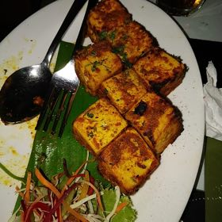
Paneer Tikka
Paneer tikka .jpg
Craversbooty · CC BY-SA 4.0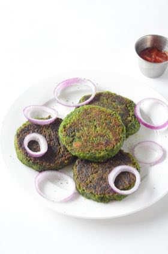
Hara Bhara
Hara Bhara Kabab.JPG
Manjula Bharath · CC BY-SA 4.0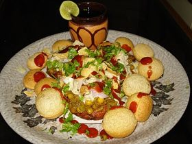
Aloo Tikki
Aloo Tikki Chaat.JPG
Nanditamomai · CC BY-SA 4.0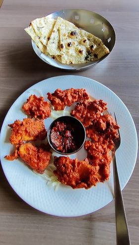
Amritsari Fish
Amritsari Fried Fish- Amritsar-Punjab IMG 04.jpg
Jhuma Datta · CC BY-SA 4.0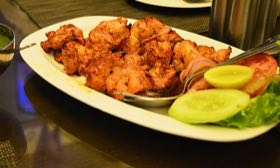
Chicken Tikka
Chicken-Tikka.jpg
Minaxibose1992 · CC BY-SA 4.0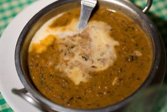
Dal Makhani
Dal Makhani.jpg
Charles Haynes · CC BY-SA 2.0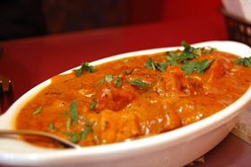
Butter Chicken
Chicken makhani.jpg
stu_spivack · CC BY-SA 2.0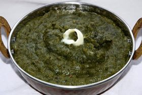
Sarson Saag
Sarson-Ka-Saag.jpg
Officialksv · CC BY-SA 4.0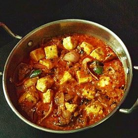
Kadai Paneer
Kadai Paneer With Gravy.jpg
Monali.mishra · CC BY-SA 4.0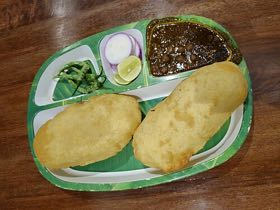
Chole Bhature
Chole Bhature 3.jpg
Gannu03 · CC BY-SA 4.0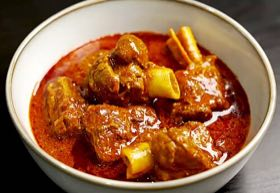
Rogan Josh
Rogan Josh Kashmiri.jpg
Spice Eats · CC BY 3.0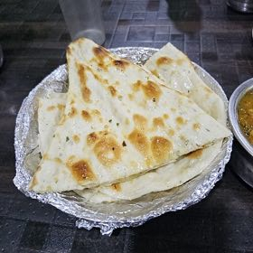
Butter Naan
Butter Naan 2.jpg
Ganesh Mohan T · CC BY-SA 4.0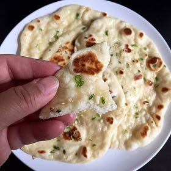
Garlic Naan
Garlic naan 1.jpg
Joy · CC BY 2.0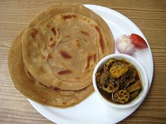
Lachha Paratha
Lachha-paratha.jpg
Sonia Goyal · CC BY-SA 2.0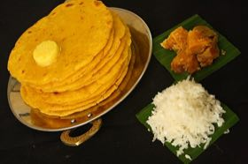
Makki Roti
Makki Di Roti.JPG
Vsigamany · CC BY-SA 4.0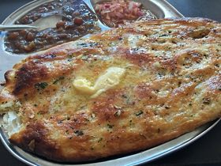
Kulcha
Amritsari Kulcha at Monu Kulcha Hut.JPG
Sumitmalhotra · CC BY-SA 4.0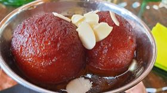
Gulab Jamun
Gulab jamun (Gibraltar, November 2020).jpg
Cabeza2000 · CC BY-SA 4.0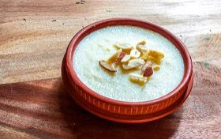
Phirni
Firni Or Phirni Bangladeshi Sweet (3).jpg
Dolon Prova · CC BY-SA 4.0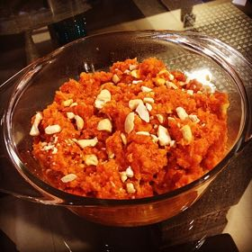
Gajar Halwa
Gajjar ka halwa (carrot halwa).JPG
Prerna Jaddwani · CC BY-SA 4.0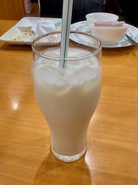
Lassi
Plain Lassi in a glass.jpg
Kyu3a · CC BY-SA 4.0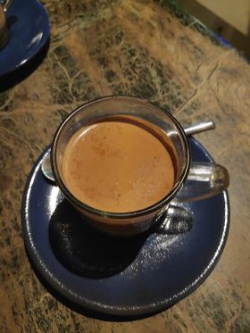
Masala Chai
Milk Masala Tea.jpg
Gaurav Dhwaj Khadka · CC BY-SA 4.0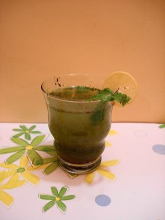
Jaljeera
Jal Jeera.JPG
Miansari66 · CC0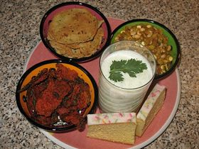
Chaas
Masala Buttermilk.JPG
Amarnujju · CC BY 3.0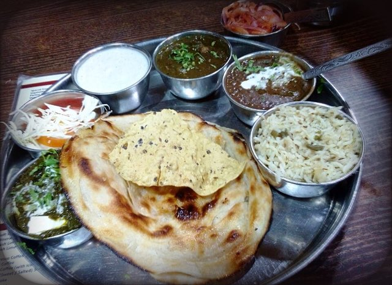
Hero thali
Veg Punjabi Thaali.jpg
Harshmander Rastogi · CC BY-SA 4.0